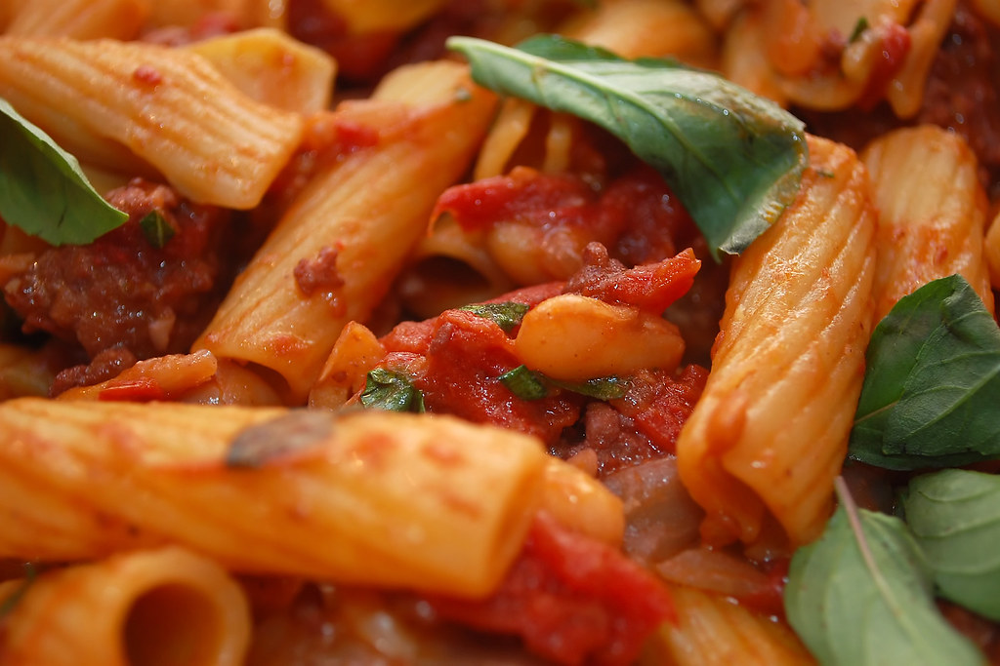
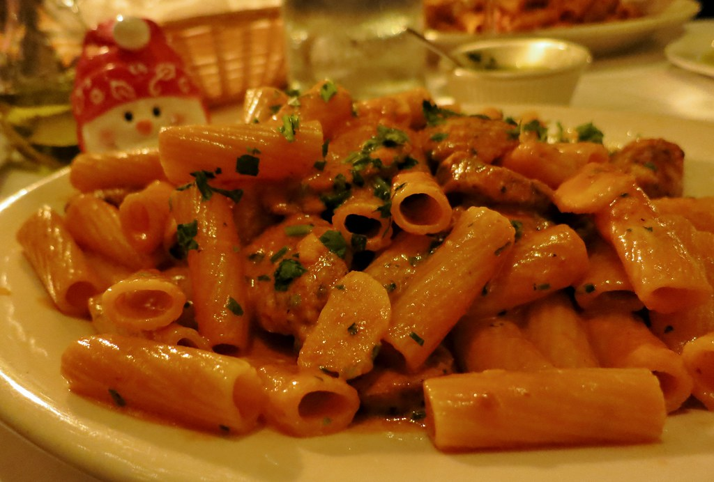

Spicy Rigatoni
Carbone Copycat Pasta By The Table of Spice
Ingredients Required
- 1 Calabrian chili pepper finely minced
- 1 lb Rigatoni boil and drained
- 1 cup reserved pasta water
- ⅓ cup Parmesan cheese
- ½ white onion diced
- ¼ cup tomato paste
- 1 cup heavy cream
- 3 tbsp olive oil
- 4 garlic cloves
- 2 tbsp butter
- ¼ cup vodka
Instructions to Follow
- Season a large pot with olive oil and butter on medium heat.
Add the onion. Season with a generous pinch of salt and cook for 5 minutes,
cook until onions are softened and translucent.
- Add the Calabrian chili peppers and garlic and cook for 2 minutes,
until fragrant.
- Add the tomato paste mix to combine with the other ingredients,
cook the tomato paste for approximately 5-7 minutes,
letting the tomato paste brown on the bottom of the pan. If the pan is drying up,
add a little more olive oil.
- Add the vodka into the pan, and scrape up all golden brown bits from the bottom.
Mix all of the ingredients together. Adjust the heat to low and add the heavy cream.
Stir until combined and let it simmer on low heat.
- Add the cooked pasta, 1 cup pasta water and shredded Parmesan to the sauce and stir together.
Taste to make sure the levels are salt are to your liking.
If you want the sauce to be more “saucy,” add more pasta water. Enjoy immediately.
Why do i like this recipe?
This is my favorite recipe because of how easy and quick it is to make. It always
comes out good, is always delicious, and can impress those you're having a meal with.
I recommend this for anyone who is new to cooking as it is very hard to mess this up.


More Recipes
Website for more easy recipes
Works Cited
- https://thetableofspice.com/recipes/carbone-spicy-rigatoni-vodka/